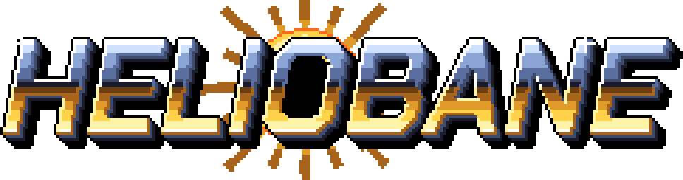
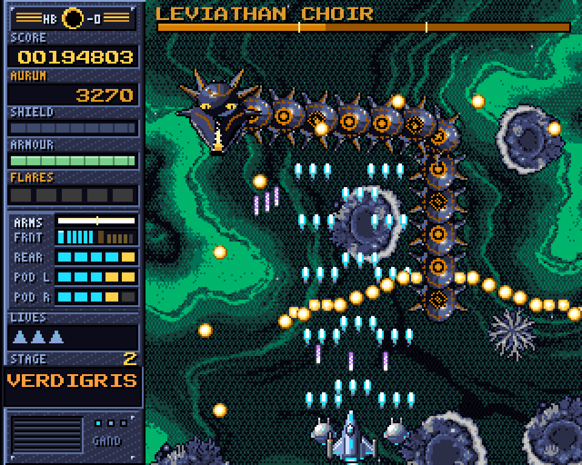
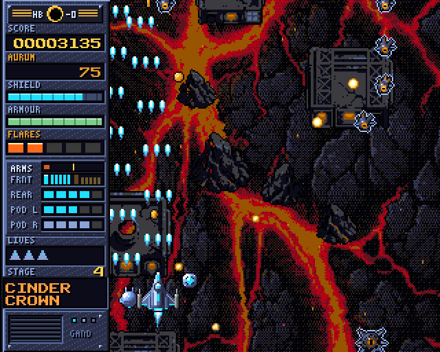
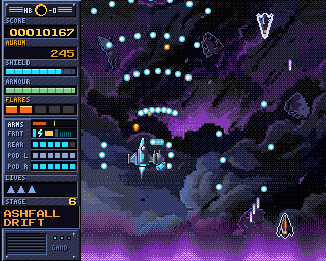
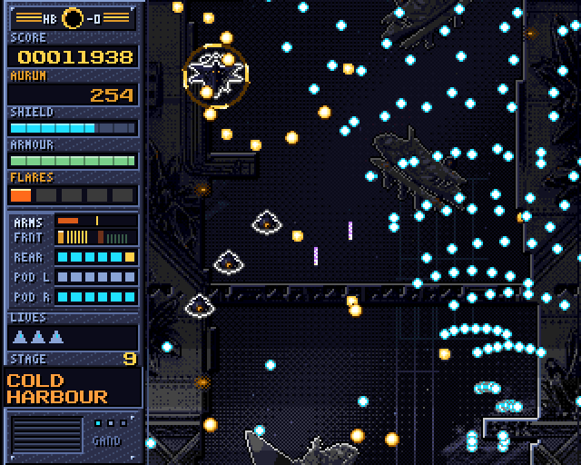
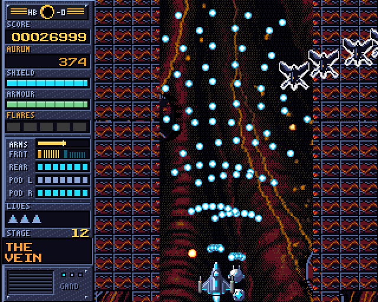
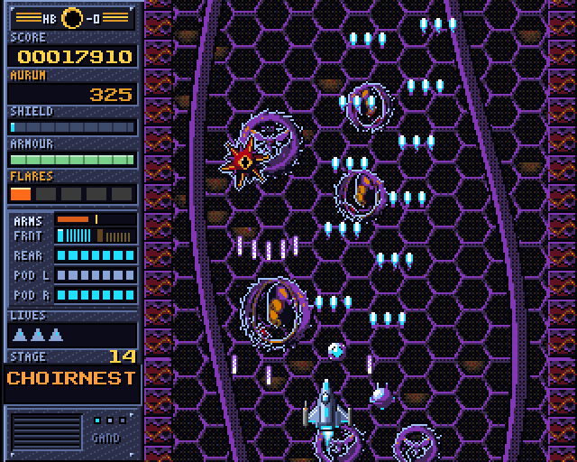
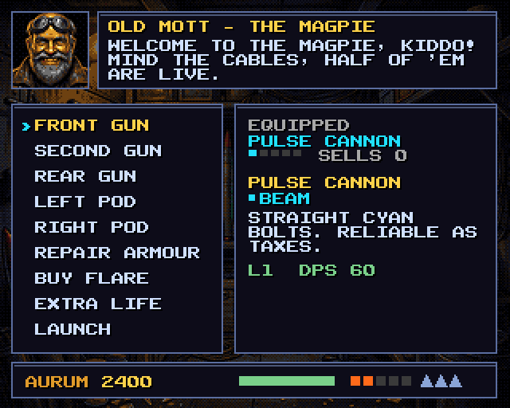
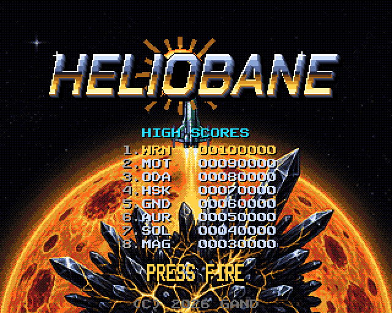

The whole of Heliobane, rebuilt for the Amiga 1200. Free on itch.io.
HELIOBANE のすべてを、アミガ1200向けに作り直しました。itch.io で無料配信中。

| Title | HELIOBANE (Amiga), version 2.0.0 |
|---|---|
| Developer | Arda (coze), Gand, Tokyo |
| Genre | Vertical-scrolling shoot 'em up |
| Platform | Commodore Amiga with AGA (A1200, A4000). Also playable on Windows, macOS and Linux through the bundled emulator |
| Chipset | AGA |
| CPU / RAM | Fast RAM build: 68030 or better with fast RAM (A1200 or A4000) Stock build (NoFast): 68EC020, 2 MB chip RAM (stock A1200) |
| Kickstart | 3.0 or later, with its Workbench (3.1 recommended) |
| Video mode | PAL screen |
| Install | Hard disk or CF card, from the game's drawer as .lha or .zip. No floppies, no hard-disk image |
| Controls | Joystick or CD32 pad in port 2 (a CD32 pad needs lowlevel.library from Workbench 3.1) |
| Release | 3 October 2026 on itch.io; 2.0.0 (all three worlds) on 20 October 2026 |
| Price | Free (name your own price on itch.io) |
| Real hardware | Tested by players on an A4000/030 with Kickstart 3.0 and on a 68060 Amiga |
| Download | coze.itch.io/heliobane-amiga |
| PC version | Steam: out now (28 October 2026) · Epic Games Store: 30 October 2026 |
| Press contact | contact@gand.games |
HELIOBANE for the Amiga is the whole of Heliobane, rebuilt for the Amiga 1200: fifteen stages in three worlds, from the star Aurel out past its heliopause to the dead star Ninth Light. Every stage ends with a Herald that fills the screen.
Wren, a salvage runner, flies the prototype gunship HB-0 Heliobane against the Umbrine, a crystalline hive that lives inside the sun. Between stages Old Mott sells guns from his salvage tug, the Magpie.
It runs on a real AGA Amiga from hard disk or CF, and the Windows, macOS and Linux downloads bring their own emulator and replacement Kickstart, so anyone can play it without an Amiga or ROMs.
| Heliobane (fast RAM) | A1200 or A4000 with a 68030 or better and fast RAM. This build has the secrets and a few nice surprises. |
|---|---|
| Heliobane-NoFast (stock A1200) | 68EC020, 2 MB chip RAM. The secrets didn't fit in its RAM. |
| Both | AGA Amiga, Kickstart 3.0 or later with its Workbench (3.1 recommended), PAL screen. Install to hard disk or CF, e.g. lha x Heliobane-Amiga-2.0.0-nofast.lha Work: |
| Move | Arrows / WASD · d-pad or left stick |
| Fire / confirm | Space · A |
| Flare / back | X · B |
| Breaker | V · X button |
| Swap guns | C · Y |
| Focus (hold) | Left Shift · right shoulder |
| Pause | Esc / P · Start |
The Windows, macOS and Linux downloads come with the FS-UAE emulator and AROS's free replacement Kickstart, so no Amiga ROMs or Workbench are needed. They emulate an A1200 with a 68030 at 50 MHz and 8 MB of fast RAM, cycle-exact. The macOS app is universal, signed and notarized. Saves and high scores carry over from 1.0.0.
FS-UAE 3.2.35 is under the GPL v2 and the AROS ROM under the AROS Public License 1.1; their sources are a separate download on itch.io. In WinUAE or FS-UAE the .zip also mounts beside your own Workbench, but it can't save there.
| タイトル | HELIOBANE（アミガ版）バージョン 2.0.0 |
|---|---|
| 開発 | Arda（coze）、Gand（東京） |
| ジャンル | 縦スクロールシューティング |
| プラットフォーム | Commodore Amiga（AGA：A1200、A4000）。同梱のエミュレーターで Windows・macOS・Linux でも遊べます |
| チップセット | AGA |
| CPU／RAM | Fast RAM 版：68030 以上と Fast RAM（A1200 または A4000） 標準版（NoFast）：68EC020、チップ RAM 2 MB（標準の A1200） |
| Kickstart | 3.0 以降と対応する Workbench（3.1 推奨） |
| 画面モード | PAL |
| インストール | ハードディスクまたは CF カードへ（.lha または .zip のドロワー）。フロッピー・HDイメージなし |
| 操作 | ポート2にジョイスティックまたは CD32 パッド（CD32 パッドには Workbench 3.1 の lowlevel.library が必要） |
| 配信 | 2026年10月3日 itch.io で配信開始。全3ワールドの 2.0.0 は2026年10月20日 |
| 価格 | 無料（itch.io で任意の金額を支払えます） |
| 実機 | プレイヤーが A4000/030（Kickstart 3.0）と 68060 搭載のアミガで動作を確認 |
| ダウンロード | coze.itch.io/heliobane-amiga |
| PC版 | Steam：発売中（2026年10月28日）· Epic Games Store：2026年10月30日発売 |
| 取材窓口 | contact@gand.games |
HELIOBANE アミガ版は、HELIOBANE のすべてをアミガ1200向けに作り直したもの。恒星オーレルからヘリオポーズの外、死んだ星ナインス・ライトまで、3つのワールドに15のステージ。どのステージの最後にも、画面を埋め尽くすヘラルドが待っています。
サルベージ屋のレンが試作戦闘艇 HB-0 ヘリオベインを駆り、太陽の中に棲む結晶の群体アンブラインに挑みます。ステージの合間には、オールド・モットがサルベージ船「マグパイ号」で銃を売りに来ます。
本物の AGA アミガでハードディスクや CF から動き、Windows・macOS・Linux 版にはエミュレーターと代替 Kickstart が入っているので、アミガや ROM がなくても遊べます。
| Heliobane（Fast RAM） | 68030 以上と Fast RAM を積んだ A1200 または A4000。隠し要素といくつかのサプライズ入り。 |
|---|---|
| Heliobane-NoFast（標準 A1200） | 68EC020、チップ RAM 2 MB。隠し要素はメモリーに収まりませんでした。 |
| 共通 | AGA アミガ、Kickstart 3.0 以降と対応する Workbench（3.1 推奨）、PAL 画面。ハードディスクか CF にインストール（例：lha x Heliobane-Amiga-2.0.0-nofast.lha Work:） |
| 移動 | 矢印キー／WASD · 十字キーまたは左スティック |
| ショット／決定 | Space · A |
| フレア／戻る | X · B |
| ブレイカー | V · X ボタン |
| 武器切り替え | C · Y |
| フォーカス（長押し） | 左 Shift · 右ショルダー |
| ポーズ | Esc／P · Start |
Windows・macOS・Linux 版には FS-UAE エミュレーターと AROS の無料代替 Kickstart が入っているので、アミガの ROM や Workbench は不要です。68030（50 MHz）と Fast RAM 8 MB を積んだ A1200 をサイクル精度でエミュレートします。macOS 版はユニバーサル、署名・公証済み。1.0.0 のセーブとハイスコアはそのまま引き継げます。
FS-UAE 3.2.35 は GPL v2、AROS ROM は AROS Public License 1.1 で、ソースは itch.io で別途ダウンロードできます。WinUAE や FS-UAE では .zip を手持ちの Workbench の横にマウントすることもできますが、その場合はセーブできません。
The Amiga version's screenshots from its itch.io page. The game draws at 320×256; shown here at ×2 (640×512). The zip has them at ×1, ×2 and ×3.
itch.io ページに掲載のアミガ版スクリーンショット。ゲームは 320×256 で描画し、ここでは2倍（640×512）で表示しています。ZIP には等倍・2倍・3倍が入っています。







Videos featured on the game's itch.io page, made by their channels.
itch.io ページで紹介している、各チャンネルによる動画です。
HELIOBANE is out now on Steam (since 28 October 2026), with a free demo there too, and comes to the Epic Games Store on 30 October 2026. It is out now on Google Play. For the PC version's fact sheet, trailer and art, see the main press kit.
HELIOBANE は Steam で発売中（2026年10月28日発売）。無料体験版も Steam で配信中です。Epic Games Store 版は2026年10月30日発売。Google Play でも配信中です。PC版のファクトシート、トレーラー、アートはメインのプレスキットをご覧ください。
AI was used to generate the game's assets: artwork, voice lines, sound effects, in-game text and translations.
ゲームのアセット（アートワーク、ボイス、効果音、ゲーム内テキスト、翻訳）の生成に AI を使用しています。
| Emailメール | contact@gand.games |
|---|---|
| Developer開発 | Arda (coze), Gand |
| itch.io | HELIOBANE (Amiga) |
| Steam | HELIOBANE · HELIOBANE Demo |
| Epic | HELIOBANE |
| Game公式サイト | heliobane.gand.games |
| Studioスタジオ | gand.tr · gand.games |